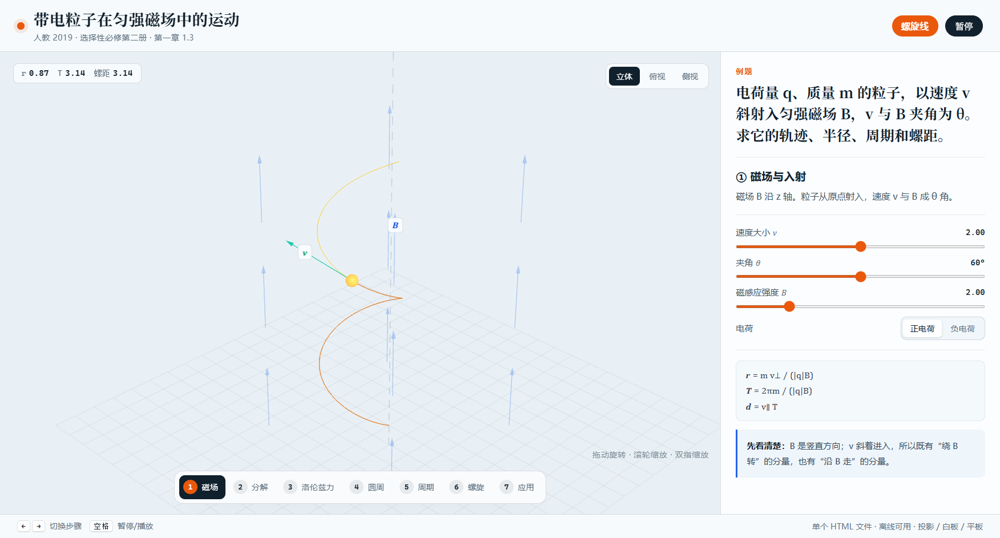
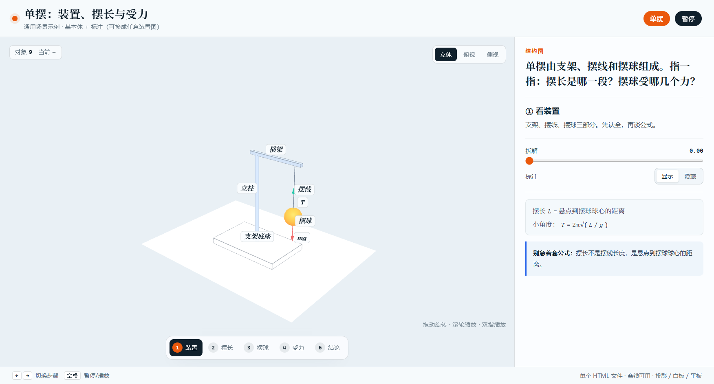
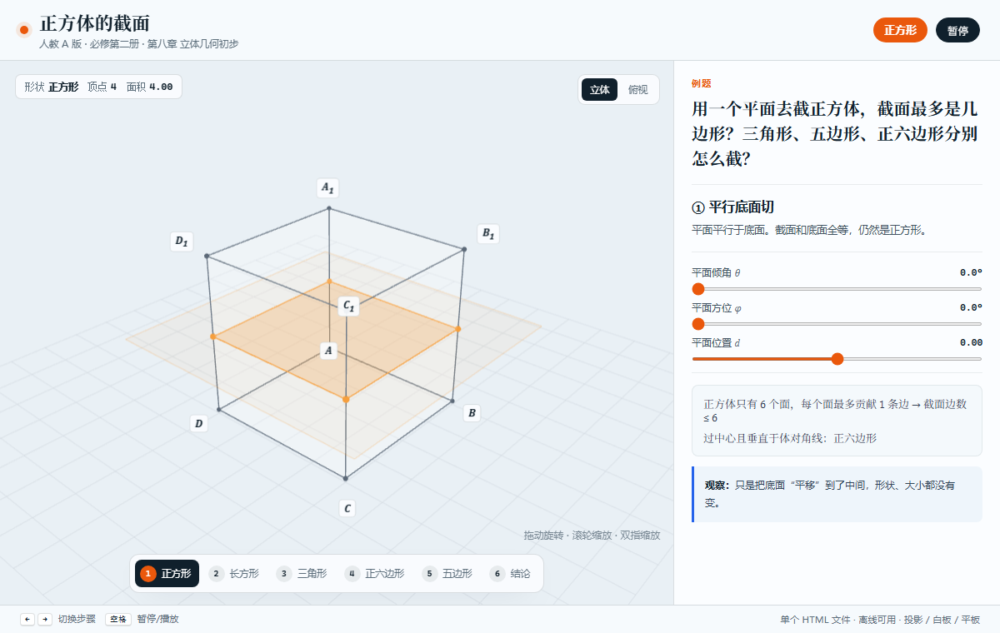

张雨 · 3D 课本插图
把一道题，做成能转的课件
课本上是静态的一张图，学生只能想象它转起来的样子。
这里把三道高中/初中题做成可交互的 3D 页面：拖一下能转，拉滑杆能改参数，点步骤条能一步步讲。 每个成品都是单个 HTML，双击就开、离线可用、投影仪上直接放。
← 回作品集
带电粒子在磁场中的运动
人教 2019 · 选择性必修二。7 步讲螺旋运动，v / θ / B 三个滑杆，实时算半径、周期、螺距。
打开 →
单摆
摆长、重力加速度可调，摆动与受力一起看；小角度近似和真实周期的差别一眼能比。
打开 →
正方体的截面
人教 A 版 · 必修二。平面倾角、方位、位置三个滑杆，三角形到正六边形一步步切出来。
打开 →一个引擎，三个场景场景数据与播放器分离，加一个知识点只需要写一份 JSON + 一个场景模块。
单文件离线three.js 内联进 HTML，约 660KB，不联网、不用装东西，U 盘拷走就能放。
物理按解析解轨迹用公式算，不做数值积分；参数与公式显示在同一屏，讲的时候不用来回切。